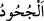

yalanladılar.
“__WORD__ Bir şeyi iyice bilip yakînen tanıdıktan sonra inadına inkâr etmektir. Burada
ise “kendileri de bunlara yakînen inandıkları halde” sözünün istidrâk (önceki sözde
bulunan yanlışlığı telâfî) anlamına gelmemesi için tekzib/yalanlama kasdedilmiştir.
“Bozguncuların sonunun nice olduğuna bir bak!” O halde ey Muhammed, nasıl oldu
bir bak. Fâsık ve zâlimlerin sonu ise dünyada suda boğma, âhirette cehennem ateşinde
yakmadır.
Müfsidlerin bütün yaptıkları kendilerine hoş görünür
Hâlbuki fesâd ehlinin âkıbetleri ateştir
Bu âyette Kureyş kâfirlerine de bir temsil vardır. Çünkü onlar da müfsid ve
mütekebbir idiler. Fir’avn’u helâk etmeye kâdir olan, aynı özellikleri taşıyan
başkalarını da helâk etmeye kâdirdir. İşte bu kıyâmete kadar devam edecektir. Çünkü
her asır ve zamanda Allah’ın dostlarına cemâli bâkî olduğu gibi düşmanlarına da celâli
bâkîdir.
Akıl sâhibine gereken, başkasının hâlinden öğüt almak, nefs-i emmârenin sıfatlarından
olan zulüm ve büyüklenme gibi helâke götüren sebepleri terk etmek, adâlet, tevâzu ve
diğer kalbin melekelerinden olan meziyetlerle hâlini ıslâh etmektir.
Âyetin işâreti ise şöyledir: İlâhî feyzi vâsıtasız almak için insanlık istîdâdını
bozanların uğrayacağı âkıbet, hayvanların ve yırtıcıların derecesine inmek ve
cehennemin en alt tabakasında şeytanlarla beraber ve arkadaş olmaktır.
İşte bir bak ki, yüceliklere yükselmek zor, aşağı düşmek ise kolaydır. Nefis ve tabîat,
havaya atılan taşa benzer ki sonunda insanı cehennem çukuruna götürür. Kişi, mücâhede
ve riyâzâtlarla onları latîfleştirmek için çalışırsa, yüksek derecelere çıkma şerefine erer
ve derekelere düşmekten kurtulur.
Hâfız der ki:
Kanatlarını aç da Tûbâ ağacında öt sen
Senin gibi bir kuşun kafeste esir olması yazık doğrusu
İnsanın nefsi çirkin olduğu halde bedeninin güzel olması onun için ne kadar kötüdür.
Bu tıpkı baykuşun mâmur ettiği bir bahçeye, kurdun koruduğu sürüye benzer. Yine
insanın malının çokluğunu ve eşyasının güzelliğine îtibar etmesi ne kötüdür. Bu da
üzerinde süs eşyası bulunan bir öküze benzer.
Şu halde insanın üstünlüğü yüksek himmetleri, hakka tâbi olması, edeb ve yasakları
işleyerek tehlikelere düşmekten kendisini alıkoyacak bir akıl iledir.
Yüce Allah’tan bizi irşâdını kabul edenlerden, kitabı ile amel edenlerden, azâbından
korunanlardan, sevabına nâil olduğu için gıbta edilenlerden kılmasını dileriz.